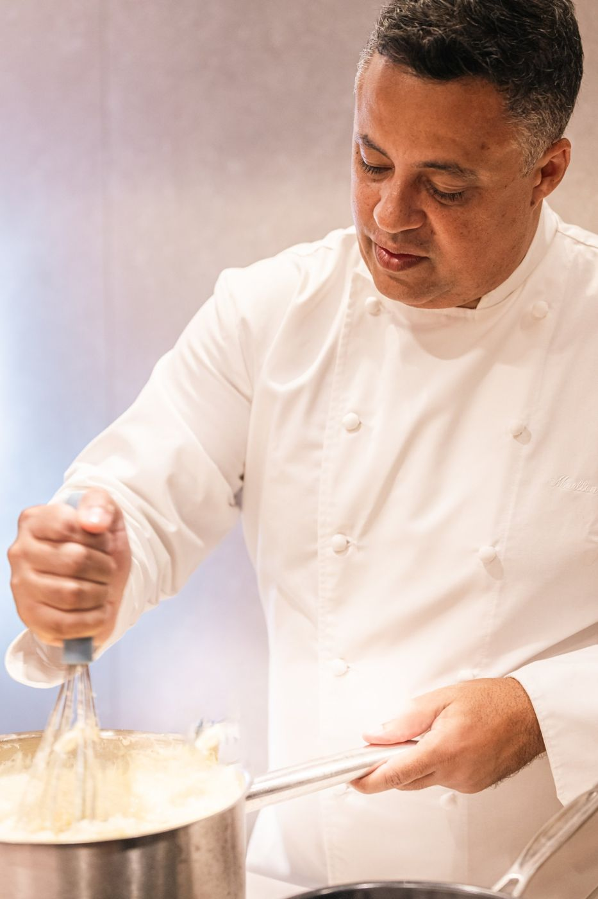
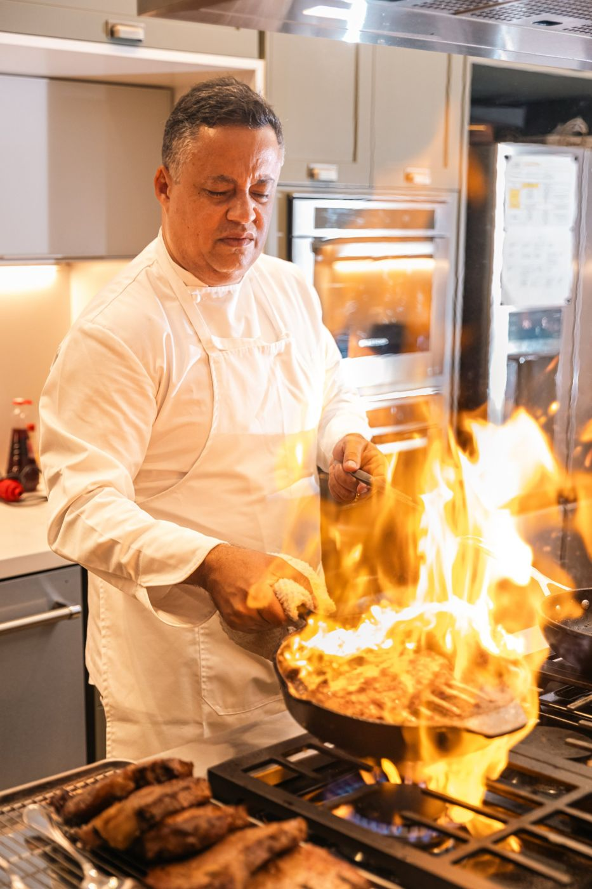
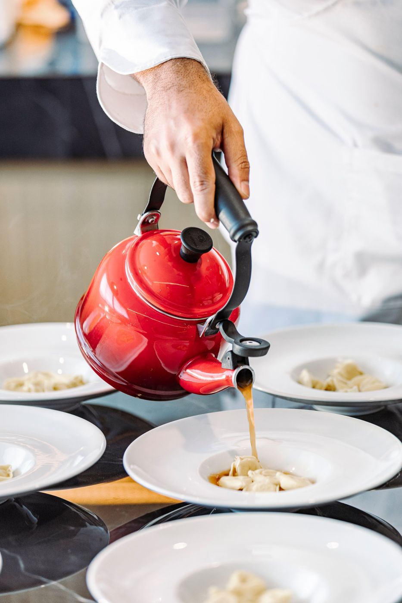
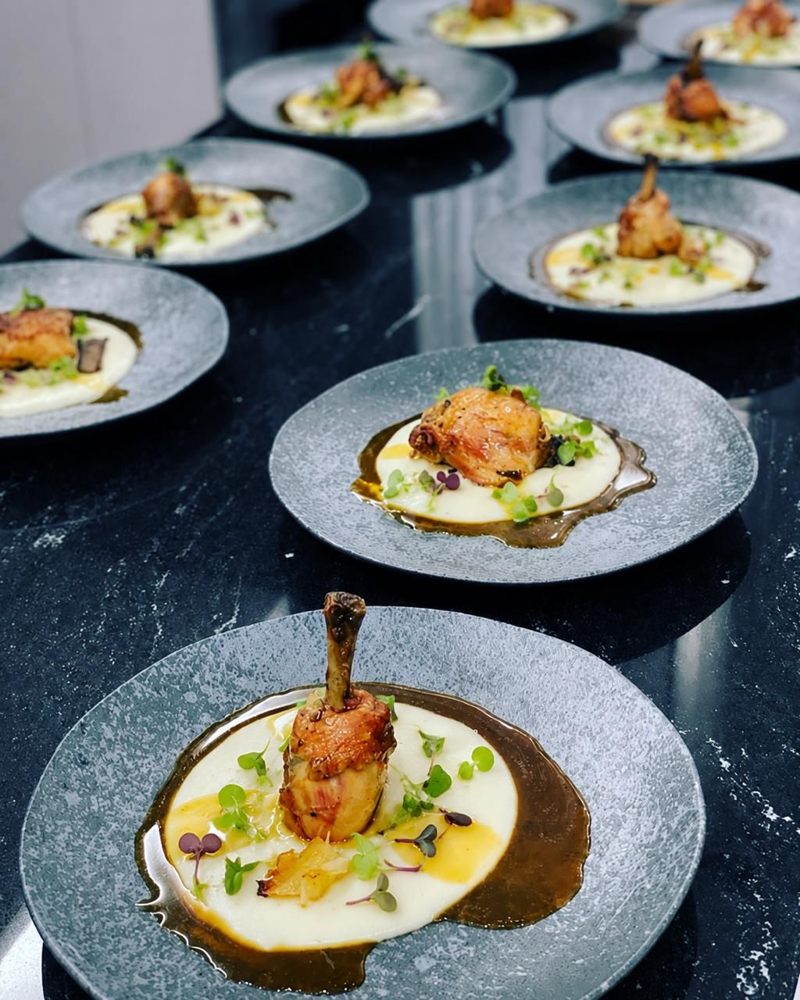
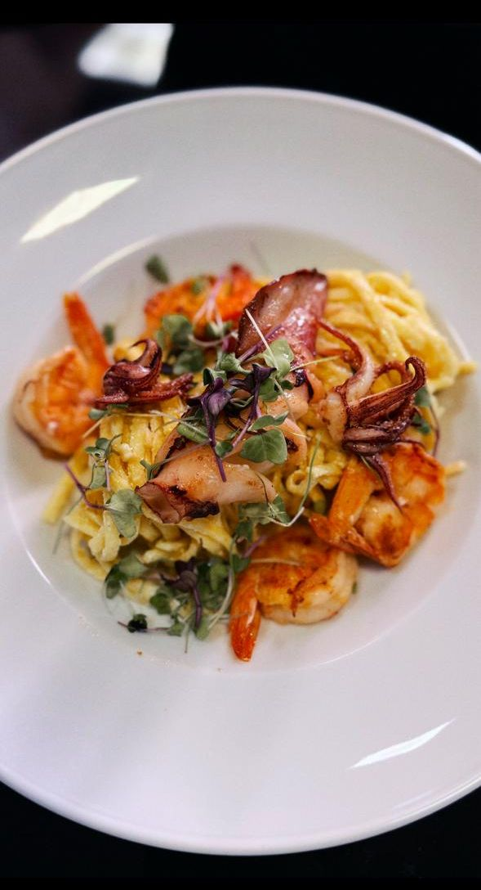
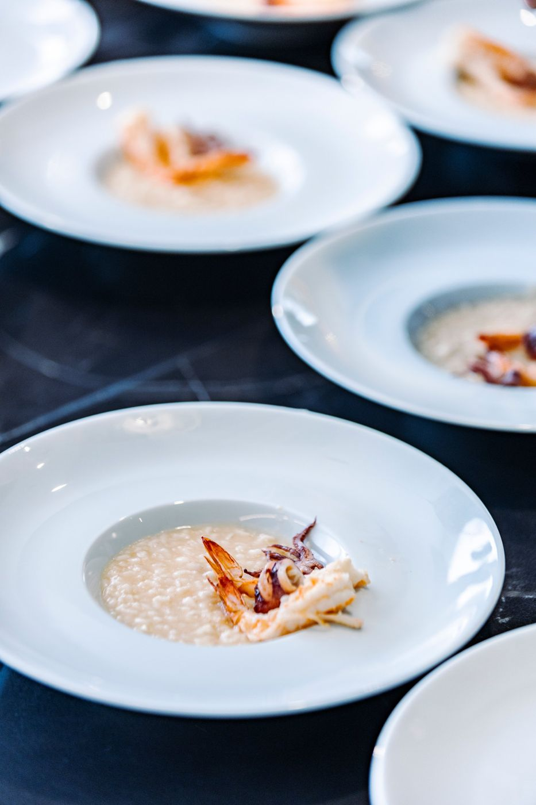
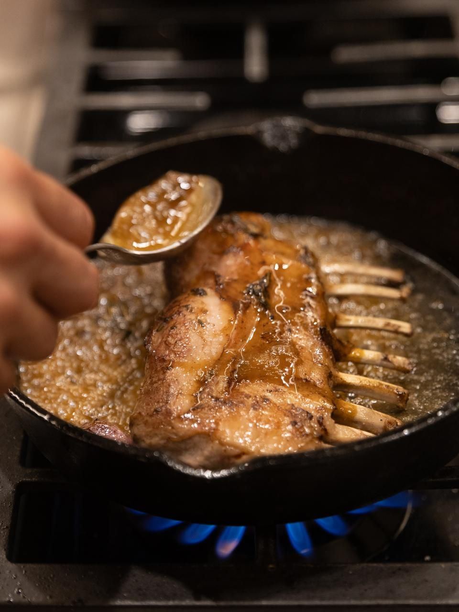
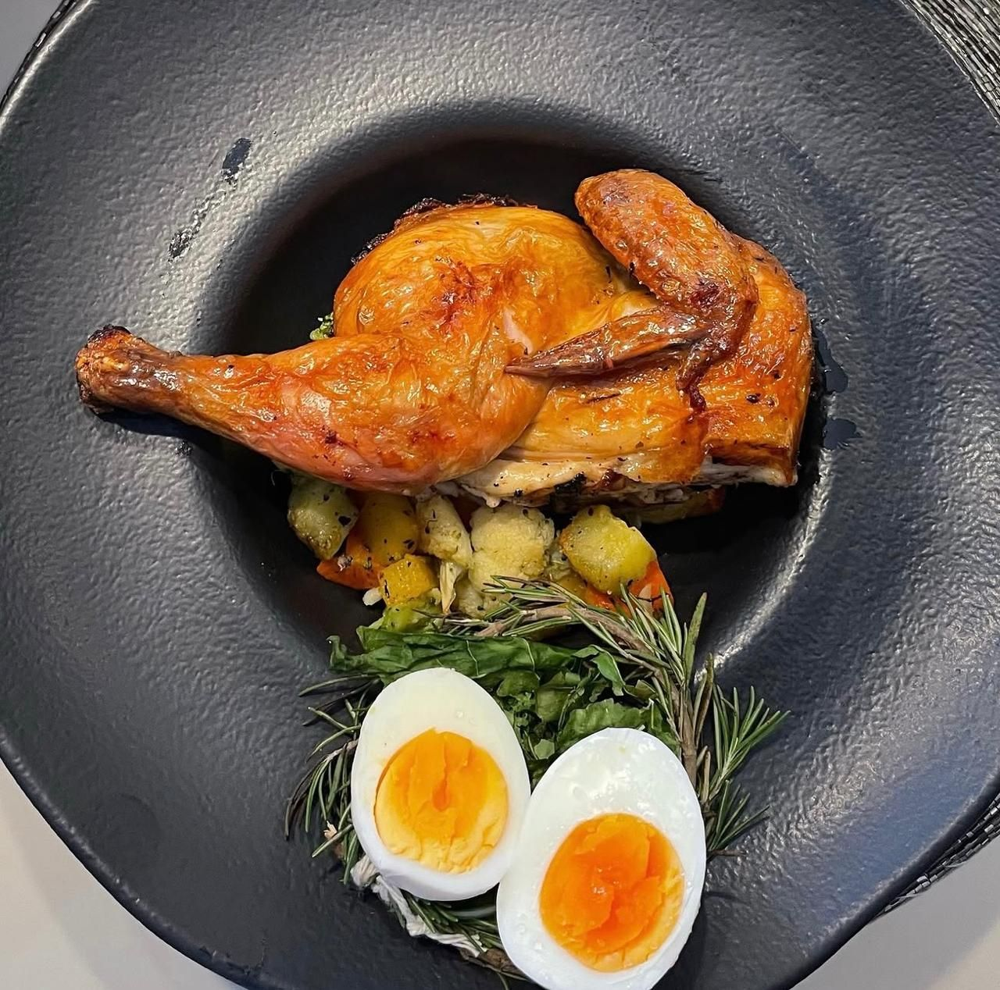

Marllon
Rezende
História, cultura e afetividade à mesa.
Transformamos ingredientes em memórias e negócios em experiências memoráveis.
Há mais de 15 anos na cozinha, com mais de 200 alunos formados.


Raiz
Quem somosCada prato carrega uma história. Cada ingrediente revela um território. Cada técnica preserva uma cultura.
É assim que nasce a Gastronomia Afetiva: comida que vira memória, servida a quem senta à mesa como se fosse de casa.
Somos loucos por gastronomia. Loucos por pessoas. Loucos por propósito.
Mais de 15 anos de carreira no Rio de Janeiro.

Ofício
Técnica a serviço do afetoAfeto sem técnica não se repete. Por isso Marllon trata a cozinha como disciplina: tempo de cocção, ponto, mise en place e ficha técnica.
Esse rigor aparece nos cursos de pizza napoletana, massa fresca e mise en place, nos eventos privados, no catering e no serviço de personal chef.
Mais de 200 alunos formados em workshops, cursos e aulas particulares.

Partilha
Formar quem cozinhaUma cozinha boa depende das pessoas que trabalham nela. Marllon leva para restaurantes e empresas o que aprendeu no fogão: cultura, liderança e padrão.
O Método Marllon Rezende conecta os quatro pilares de atuação para gerar resultados que se medem: 17 ferramentas em Fundamentos & Cultura, Operação & Padrões, Estratégia & Crescimento e Financeiro & Controle.
Inclui CMV, fichas técnicas, POPs, PDI e Hunter Gastronômico.
Assinaturas




- Massa fresca com frutos do marFresh pasta with seafood
- Risoto de frutos do marSeafood risotto
- Carré de cordeiro na manteigaButter-basted rack of lamb
- Galeto assado, legumes e ovo cozidoRoast spring chicken, vegetables and boiled egg
- Tortellini em caldoTortellini in broth
- Frango, purê e jusChicken, purée and jus
- Pizza napoletanaNeapolitan pizza
Uma obsessão
Da cozinha à gestão
Do conhecimento à experiência. Quatro pilares ligados pelo Método Marllon Rezende.
Experiências
A mesa montada para a sua ocasião.
- Eventos privados
- Catering
- Personal chef
- Experiências gastronômicas
Educação
Técnica ensinada com as mãos na massa.
- Workshops
- Cursos
- Treinamentos
- Aulas particulares
Consultoria
Restaurantes com padrão, margem e rumo.
- Processos e gestão
- CMV e fichas técnicas
- POPs
- Recrutamento e seleção
Pessoas & Cultura
Equipes que sabem por que cozinham.
- Desenvolvimento de liderança
- Cultura organizacional
- Hunter Gastronômico
- Desenvolvimento de equipes